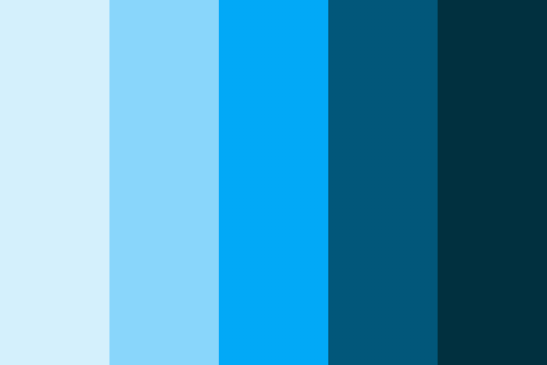
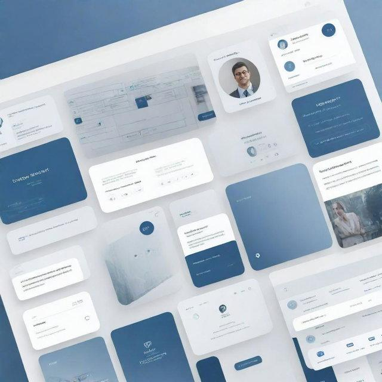
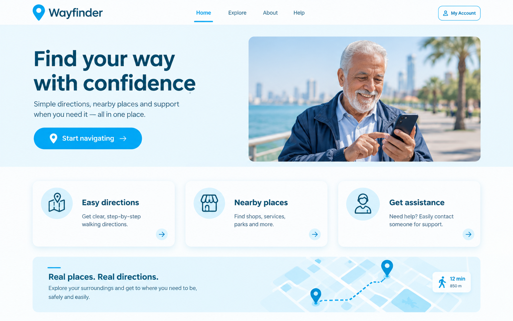
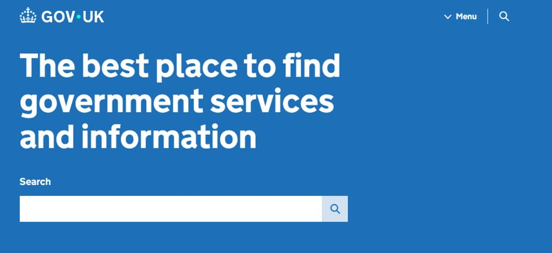
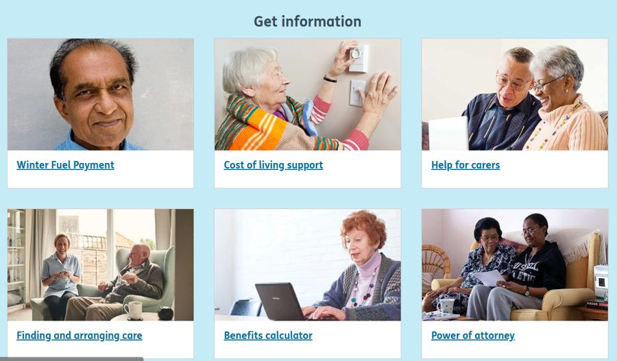
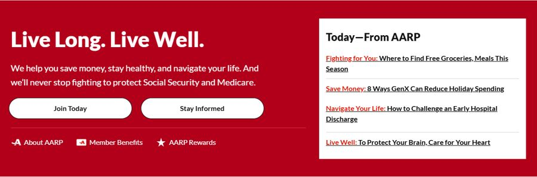
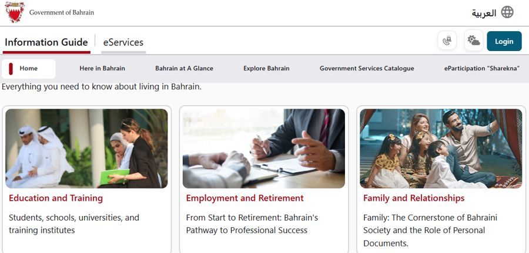
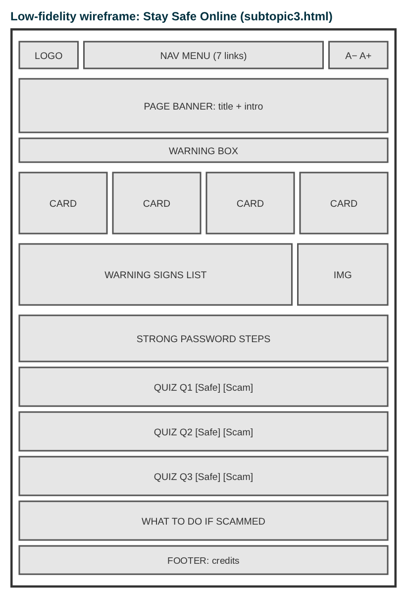
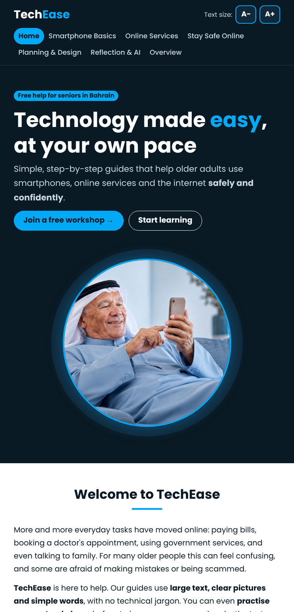

1. Website planning
We followed a simple process: research → plan → wireframes → mockups → style guide → build → test. Before writing any code we defined the problem, the target audience and the requirements (see the Overview page), then designed the structure of all seven pages.
Project timeline
| Dates | Stage | Output |
|---|---|---|
| 24 - 25 Oct | Research & requirements | Problem statement, audience, requirements, site map, user journey |
| 26 - 27 Oct | Design | Mood board, colour palette, typography, low-fidelity wireframes |
| 28 - 29 Oct | Mockups | High-fidelity mockups for desktop, tablet and mobile |
| 30 Oct - 21 Nov | Development | HTML pages, CSS, Bootstrap layout, JavaScript form validation and quiz |
| 22 - 23 Nov | Documentation | Planning, reflection and overview pages, AI documentation |
| 24 Nov | Testing | Testing on phone, tablet and laptop |
| 25 Nov | Final review & submission | Reviewed real reference websites, completed the AI documentation and credits, final checks, ZIP file |
Team roles
| Member | Main responsibilities |
|---|---|
| Zainab Marhoon 202503094 | Project lead (team leader); Stay Safe Online page and Spot the Scam quiz; Reflection & AI Report page; testing on phone, tablet and laptop; final ZIP |
| Hiba Almutawa 202507845 | Home page (hero, call to action); registration form and JavaScript validation; Overview page (requirements and AI documentation) |
| Maram Maki 202400729 | Smartphone Basics page; phone practice simulator; creating the website photos with ChatGPT and image credits |
| Mohamed Humaid 202400113 | Online Services page; Planning & Design page (wireframes, mockups, colour palette, typography and style guide) |
2. Mood board (inspiration)
We used ChatGPT to create inspiration images showing the style we wanted: a calm, trustworthy blue look, large friendly photos and clear cards.

Colour inspiration

Card-based UI inspiration

Layout reference
We also visited real websites made for older people and took screenshots of the parts that inspired us.

Inspiration: GOV.UK (gov.uk)

Inspiration: Age UK (ageuk.org.uk)

Inspiration: AARP (aarp.org)

Inspiration: Bahrain National Portal (bahrain.bh)
Reference sites we reviewed for senior-friendly design
| Website | What we liked | What we did not like | What we used in TechEase |
|---|---|---|---|
| GOV.UK | A very large, bold heading, a big search box, plain language and simple links with arrows | A large cookie banner fills the top of the screen before you see anything, and the page has no photos, so it feels cold | Large headings, simple words with no jargon and a clean, uncluttered layout, but with friendly photos and no pop-ups |
| Age UK | A grid of cards, each with a large photo of an older person and a big, underlined link title | The link titles are small next to the big photos, and the "Donate now" appeal competes with the information | Our topic cards with an icon and a large, clear title, and one simple call to action |
| AARP | Large rounded buttons, short headings, and a banner offering free online classes to help older people use FaceTime and Zoom | Very busy: a top banner, two menus and many links fight for attention, and the strong red can feel alarming | Our rounded "pill" buttons and the idea of free workshops, but with one simple menu and a calm blue colour |
| bahrain.bh | Bahrain's official portal: an Arabic / English switch, an accessibility button, a large search box and cards with photos and clear titles | The white heading sits on a blurry, busy background photo, the page has two menu levels, and a moving slider is hard to follow | Cards with photos and clear titles, and accessibility controls (our A− / A+ buttons), but with text on solid backgrounds, one menu and no sliders. Our Online Services guide points users to this official portal. |
3. Low-fidelity wireframes
Simple grey-box layouts showing where each section goes, before any colours or images were added.

Home

Smartphone Basics

Online Services

Stay Safe Online

Planning & Design

Reflection & AI Report

Overview
4. High-fidelity mockups
The final look of the home page with colours, fonts, images and real content, shown on three screen sizes.

Desktop (1280px): hero text and image side by side, 3 cards in a row

Tablet (768px): 2 cards in a row

Mobile (390px): one column, full-width buttons
5. Colour palette
#02A9F7
Buttons, highlights
#0A1A24
Nav, hero, footer
#F5B700
Warnings, tap hints
#10283A
Dark cards
#02577A
Links on light areas
#F2F8FB
Reading sections
6. Typography
| Use | Font | Sizes | Why |
|---|---|---|---|
| Headings | Poppins Bold (700) | H1 48px · H2 34px · H3 24px | Modern, round letter shapes that look friendly and professional |
| Body text | Poppins Regular (400) / SemiBold (600) | 20px (never below 17px), line height 1.7 | Wide, open letters and extra line spacing make long text easier to read for older eyes |
7. Design decisions
| Decision | Reason |
|---|---|
| Dark & modern theme for the nav, hero, banners and footer | A dark navy frame looks modern and makes the bright-blue buttons stand out, so users always know what to click. |
| Long reading sections stay light | Dark backgrounds are tiring for long text, so all guides and tables use dark text on a light background. |
| Bright-blue buttons with navy text (not white) | We checked contrast with the WCAG guidelines. White text on bright blue #02A9F7 is only 2.6:1 (fails), but navy #0A1A24 on bright blue is 6.8:1 (passes). White text on navy is 17.7:1. |
| Phone practice simulator | Many seniors are afraid of "pressing the wrong button". A pretend phone lets them practise safely, with yellow outlines showing what to tap and friendly hints for wrong taps. |
| Amber accent for warnings | Scam warnings must stand out from the blue page so they are noticed straight away. |
| Poppins font, body text 20px, never below 17px | Older users often have reduced eyesight; larger text reduces eye strain. |
| A− / A+ text-size buttons | Users can choose their own comfortable size. The choice is saved and kept on every page. |
| Short numbered steps | One action per step is easier to follow and remember. |
| Error messages use an icon and words, not only colour | Colour-blind users can still understand the message. |
| Same navigation on every page, all pages one click away | A simple, predictable structure so users never feel lost. |
| Bootstrap 5 grid | Makes the layout responsive: 3 columns on desktop, 2 on tablet, 1 on mobile. |